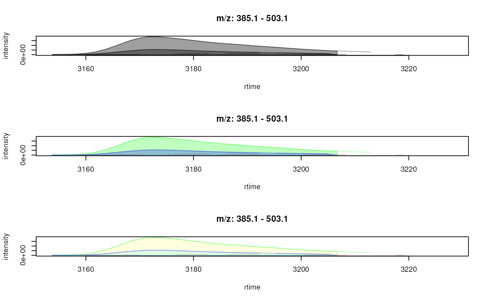
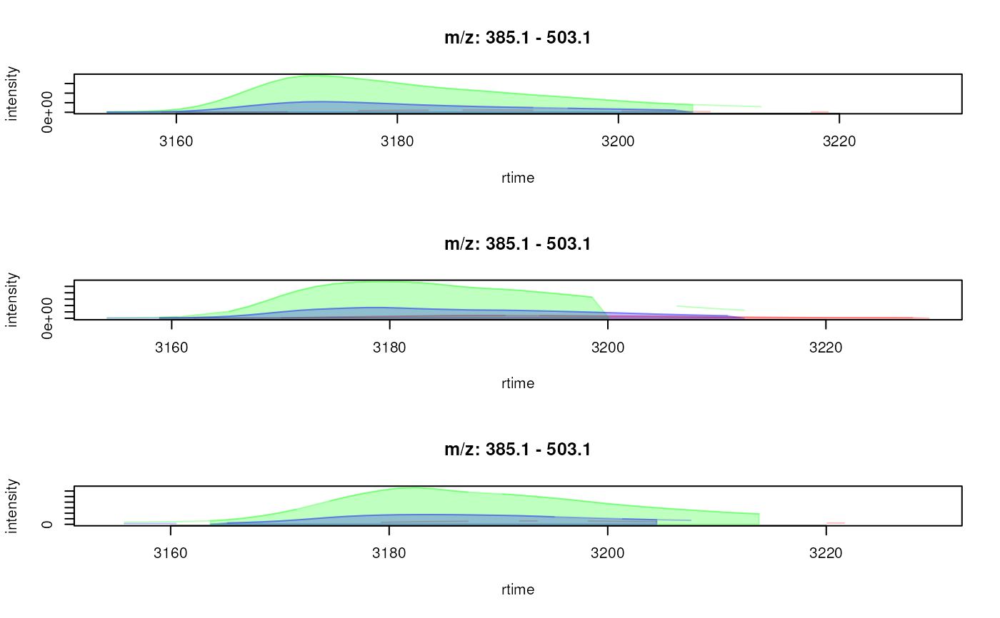
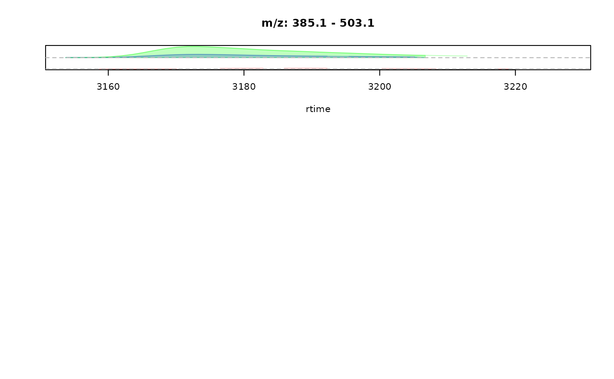

Plot multiple chromatograms into the same plot
Source:R/methods-MChromatograms.R
plotChromatogramsOverlay.RdplotOverlay draws chromatographic peak data from multiple (different)
extracted ion chromatograms (EICs) into the same plot. This allows to
directly compare the peak shape of these EICs in the same sample. In
contrast to the plot function for MChromatograms() object, which draws
the data from the same EIC across multiple samples in the same plot, this
function draws the different EICs from the same sample into the same plot.
If plotChromatogramsOverlay is called on a XChromatograms object any
present chromatographic peaks will also be highlighted/drawn depending on the
parameters peakType, peakCol, peakBg and peakPch (see also help on
the plot function for XChromatogram() object for details).
Usage
# S4 method for MChromatograms
plotChromatogramsOverlay(
object,
col = "#00000060",
type = "l",
main = NULL,
xlab = "rtime",
ylab = "intensity",
xlim = numeric(),
ylim = numeric(),
stacked = 0,
transform = identity,
...
)
# S4 method for XChromatograms
plotChromatogramsOverlay(
object,
col = "#00000060",
type = "l",
main = NULL,
xlab = "rtime",
ylab = "intensity",
xlim = numeric(),
ylim = numeric(),
peakType = c("polygon", "point", "rectangle", "none"),
peakBg = NULL,
peakCol = NULL,
peakPch = 1,
stacked = 0,
transform = identity,
...
)Arguments
- object
MChromatograms()orXChromatograms()object.- col
definition of the color in which the chromatograms should be drawn. Can be of length 1 or equal to
nrow(object)to plot each overlayed chromatogram in a different color.- type
character(1)defing the type of the plot. By default (type = "l") each chromatogram is drawn as a line.- main
optional title of the plot. If not defined, the range of m/z values is used.
- xlab
character(1)defining the x-axis label.- ylab
character(1)defining the y-axis label.- xlim
optional
numeric(2)defining the x-axis limits.- ylim
optional
numeric(2)defining the y-axis limits.- stacked
numeric(1)defining the part (proportion) of the y-axis to use to stack EICs depending on their m/z values. Ifstacked = 0(the default) no stacking is performed. Withstacked = 1half of the y-axis is used for stacking and half for the intensity y-axis (i.e. the ratio between stacking and intensity y-axis is 1:1). Note that ifstackingis different from 0 no y-axis and label are drawn.- transform
functionto transform the intensity values before plotting. Defaults totransform = identitywhich plots the data as it is. Withtransform = log10intensity values would be log10 transformed before plotting.- ...
optional arguments to be passed to the plotting functions (see help on the base R
plotfunction.- peakType
if
objectis aXChromatogramsobject: how chromatographic peaks should be drawn:peakType = "polygon"(the default): label the full chromatographic peak area,peakType = "rectangle": indicate the chromatographic peak by a rectangle andpeakType = "point": label the chromatographic peaks' apex position with a point.- peakBg
if
objectis aXChromatogramsobject: definition of background color(s) for each chromatographic peak. Has to be either of length 1 or equal to the number of peaks inobject. If not specified, the peak will be drawn in the color defined bycol.- peakCol
if
objectis aXChromatogramsobject: definition of color(s) for each chromatographic peak. Has to be either of length 1 or equal to the number of peaks inobject. If not specified, the peak will be drawn in the color defined bycol.- peakPch
if
objectis aXChromatogramsobject: point character to be used to label the apex position of the chromatographic peak ifpeakType = "point".
Value
silently returns a list (length equal to ncol(object) of
numeric (length equal to nrow(object)) with the y position of
each EIC.
Examples
## Load preprocessed data and extract EICs for some features.
library(xcms)
xdata <- loadXcmsData()
data(xdata)
## Update the path to the files for the local system
dirname(xdata) <- c(rep(system.file("cdf", "KO", package = "faahKO"), 4),
rep(system.file("cdf", "WT", package = "faahKO"), 4))
#> Error in (function (classes, fdef, mtable) { methods <- .findInheritedMethods(classes, fdef, mtable) if (length(methods) == 1L) return(methods[[1L]]) else if (length(methods) == 0L) { cnames <- paste0("\"", vapply(classes, as.character, ""), "\"", collapse = ", ") stop(gettextf("unable to find an inherited method for function %s for signature %s", sQuote(fdef@generic), sQuote(cnames)), domain = NA) } else stop("Internal error in finding inherited methods; didn't return a unique method", domain = NA)})(list(structure("XcmsExperiment", package = "xcms")), new("standardGeneric", .Data = function (object, ...) standardGeneric("path"), generic = structure("path", package = "BiocGenerics"), package = "BiocGenerics", group = list(), valueClass = character(0), signature = "object", default = NULL, skeleton = (function (object, ...) stop(gettextf("invalid call in method dispatch to '%s' (no default method)", "path"), domain = NA))(object, ...)), <environment>): unable to find an inherited method for function ‘path’ for signature ‘"XcmsExperiment"’
## Subset to the first 3 files.
xdata <- filterFile(xdata, 1:3, keepFeatures = TRUE)
## Define features for which to extract EICs
fts <- c("FT097", "FT163", "FT165")
chrs <- featureChromatograms(xdata, features = fts)
plotChromatogramsOverlay(chrs)
## plot the overlay of EICs in the first sample
plotChromatogramsOverlay(chrs[, 1])
## Define a different color for each feature (row in chrs). By default, also
## all chromatographic peaks of a feature is labeled in the same color.
plotChromatogramsOverlay(chrs[, 1],
col = c("#ff000040", "#00ff0040", "#0000ff40"))
## Alternatively, we can define a color for each individual chromatographic
## peak and provide this with the `peakBg` and `peakCol` parameters.
chromPeaks(chrs[, 1])
#> mz mzmin mzmax rt rtmin rtmax into intb maxo
#> CP2973 354.1357 354.1 354.2 2789.781 2755.258 2826.270 299005.1 NA 9700
#> CP0312 413.1000 413.1 413.1 3637.671 3614.978 3665.850 879851.5 852195.3 30920
#> CP0089 414.2000 414.2 414.2 3066.457 3038.628 3089.311 234308.5 218923.4 9669
#> sn sample row column
#> CP2973 NA 1 1 1
#> CP0312 34 1 2 1
#> CP0089 15 1 3 1
## Use a color for each of the two identified peaks in that sample
plotChromatogramsOverlay(chrs[, 1],
col = c("#ff000040", "#00ff0040", "#0000ff40"),
peakBg = c("#ffff0020", "#00ffff20"))

## Plotting the data in all samples.
plotChromatogramsOverlay(chrs,
col = c("#ff000040", "#00ff0040", "#0000ff40"))

## Creating a "stacked" EIC plot: the EICs are placed along the y-axis
## relative to their m/z value. With `stacked = 1` the y-axis is split in
## half, the lower half being used for the stacking of the EICs, the upper
## half being used for the *original* intensity axis.
res <- plotChromatogramsOverlay(chrs[, 1], stacked = 1,
col = c("#ff000040", "#00ff0040", "#0000ff40"))
## add horizontal lines for the m/z values of each EIC
abline(h = res[[1]], col = "grey", lty = 2)
## Note that this type of visualization is different than the conventional
## plot function for chromatographic data, which will draw the EICs for
## multiple samples into the same plot
plot(chrs)

## Converting the object to a MChromatograms without detected peaks
chrs <- as(chrs, "MChromatograms")
plotChromatogramsOverlay(chrs,
col = c("#ff000040", "#00ff0040", "#0000ff40"))